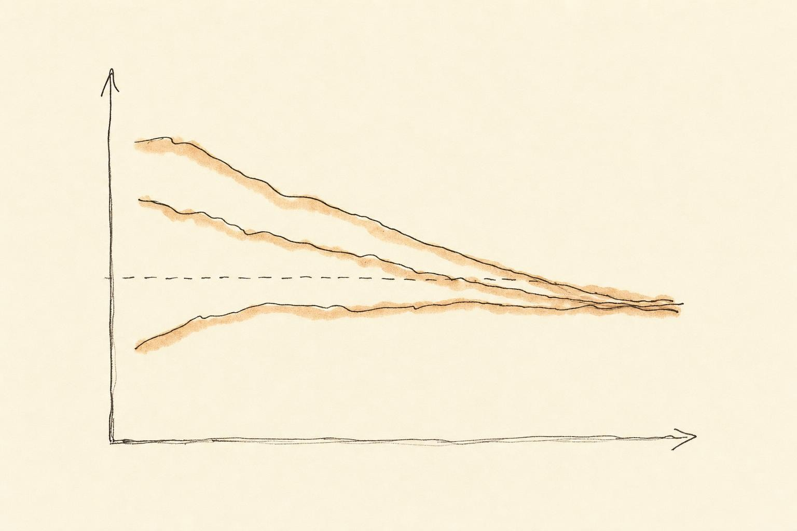

Reading Your Own Signals
Turning eight chapters of theory into a daily decision, push, hold, or back off, using the six signals actually worth your attention.
You wake up, and before your feet hit the floor you already have an opinion about the day. Your legs feel like wet sandbags, or they feel light and quick, or, on most mornings, they feel like nothing in particular, and you have no idea whether the session on your calendar is a good idea. This is the moment the entire course has been building toward. Every lever we have studied, sleep, nutrition, soreness, active recovery, modality choice, deloads, life stress, only becomes actionable at the instant you decide what to do with today's training. That decision is the skill. Everything else was input.
The problem is that your morning opinion, taken alone, is a liar. Soreness lies. A single night's poor sleep lies. Your gut feeling lies in both directions, talking you into a workout you should skip and talking you out of one you needed. The purpose of this closing chapter is to replace that one lying signal with a small, honest chorus, built from six ordinary measurements: resting heart rate, heart rate variability (HRV), session and daily rating of perceived exertion (RPE), sleep quality, mood, and body weight. None of these six is impressive on its own. Together, read against your own history, they are the closest thing to a readiness instrument you will ever own.
Soraya, a 39-year-old project manager training for her third marathon, is this chapter's example of what happens when that chorus goes unheard. She wears a wrist device that hands her a single glowing readiness number each morning, and for most of a training block she let that number make decisions a coach, or a well-built dashboard, should have made instead. Her story runs through this chapter not because it is dramatic. It is ordinary. Most people who track anything eventually make the two mistakes Soraya made: trusting one number too much, and trusting it for the wrong reason.
Notice, too, what this chapter is not. It is not a pitch for a particular gadget, and it is not a claim that more data automatically produces better decisions. Some of the most useful instruments in this chapter cost nothing beyond a notebook and thirty seconds each morning. The skill being taught is judgment under noisy information, the same judgment a good coach applies when reading an athlete they know well, translated into a form you can apply to yourself without needing anyone else in the room.
Why monitoring is the capstone, not an add-on
We have spent this course defending a single causal chain. Training applies a stress. Recovery governs whether that stress becomes adaptation or damage. And total load, the sum of training and life, determines how much recovery you actually get. If that chain is true, then the practical question is never "what is the optimal program?" in the abstract. It is "given everything acting on me right now, is my planned dose landing as adaptation or accumulating as debt?" You cannot answer that from the program written on paper. You can only answer it by reading signals, every day, against your own history.
This is why readiness monitoring is the capstone rather than one more technique alongside the others. It is the single competency in which sleep quality (Chapter 2), soreness (Chapter 4), session RPE and performance drift (Chapter 7), and mood and life stress (Chapter 8) stop being separate topics and become inputs to one practical judgment made before breakfast. Meeusen and colleagues (2012), in the joint consensus statement on overtraining from the European College of Sport Science and the American College of Sports Medicine, put the underlying logic plainly: successful training must involve overload, but it must avoid the combination of excessive overload with inadequate recovery. Monitoring is how you keep yourself on the right side of that "but," day after day, without waiting for a coach or a lab test to tell you where you stand.
Halson (2014), in one of the field's most cited reviews of load monitoring, surveyed the entire toolbox available to athletes and practitioners: external load from GPS units and power meters, internal load from RPE and heart rate, and recovery markers ranging from heart rate variability to sleep questionnaires. Her conclusion should govern your expectations for the rest of this chapter. Appropriate monitoring can distinguish an athlete who is adapting from one drifting toward non-functional overreaching, illness, or injury, but according to Halson (2014), no single definitive marker exists in the scientific literature. There is no readiness molecule. There is no one number, however expensive the device that produced it. There is only the pattern you build across several weak signals, read consistently, over time.
The tyranny of the single signal
Return to that wet-sandbag morning. The temptation is to let one vivid sensation decide the day, and the most seductive of these is soreness. We spent Chapter 4 dismantling delayed-onset muscle soreness as a proxy for anything useful: it tracks unfamiliarity and eccentric loading far more than it tracks the productive stimulus of a session, it is absent after many of your most effective workouts, and it is present after many of your most pointless ones. Soreness is the signal that lies most confidently. If you only ever read one thing on a given morning, do not let it be soreness.
But the deeper point is not "distrust soreness specifically." It is that every single signal, read in isolation, has a poor signal-to-noise ratio. Resting heart rate spikes because you drank two glasses of wine, not because you are overreached. Your mood is foul because of an email, not a training load. Last night's sleep was short because a neighbor's dog barked at 2 a.m., not because your autonomic system is fried. Any one measurement, taken alone, is contaminated by the ordinary noise of being a person who has a life outside the gym.
The escape from single-signal tyranny is not a better single signal. It is convergence. When soreness, poor sleep, elevated resting heart rate, low mood, and an inflated session RPE all point the same direction on the same morning, the probability that they are all being fooled by independent noise, at the same time, collapses. That is the entire statistical argument for a dashboard: weak signals that disagree cancel their errors, and weak signals that agree multiply their meaning. One dial can be wrong for a hundred small reasons. Five dials agreeing is rarely an accident.
Subjective beats objective, a genuinely surprising finding
Here is where the evidence forces most people to revise an intuition. We tend to assume that objective measures, blood markers, heart rate variability, oxygen consumption, must be more trustworthy than a person's self-report, because numbers feel harder than feelings. The literature says otherwise, and says it clearly.
Saw, Main, and Gastin (2016) conducted a systematic review of 56 studies comparing objective and subjective measures of athlete well-being against training load. Their headline finding, stated in the title itself, is that subjective self-reported measures trump commonly used objective measures. Subjective well-being was reliably impaired when acute training load increased and reliably restored when load was reduced, with superior sensitivity and consistency compared to the objective markers tested against it. In plain terms, a simple morning question, "how do I feel, on a scale," tracked the body's response to training better than the blood draw did.
Recent work extends this into the wearable era. According to Spetz and colleagues (2025), who validated self-rated subjective parameters against objectively measured wearable data in elite endurance athletes, self-reported physical and mental load were not only cheaper and simpler to collect but showed correlations with wearable-derived measures strong enough to be clinically useful, while also fostering the athlete's own awareness of how they were adapting. The act of rating yourself, honestly and consistently, makes you a better reader of yourself. That is a benefit no gadget can hand you off the shelf.
None of this means objective measures are useless. Both Saw and colleagues and Spetz and colleagues advocate a mixed approach: subjective self-report as the reliable spine, with a small number of simple objective checks adding texture. The mistake is inverting the hierarchy, treating the sensor as the truth and your own report as the soft, unreliable supplement. The evidence puts the cheap subjective question first, and everything that follows in this chapter is built on that ordering.
Subjective measures reflected acute and chronic training loads with superior sensitivity and consistency than commonly used objective measures.
Saw, Main, & Gastin (2016)
The six signals, weighed honestly
With the hierarchy settled, subjective first, objective second, we can go through the six measurements this chapter promised at the start, one at a time. For each, the same three questions matter: what does it actually track, how noisy is a single reading, and what should you do with a trend once you have one. Skim past a signal here and you will misuse it later, so treat this section as the reference you return to once your own dashboard is running.
Resting heart rate
Resting heart rate is the oldest objective monitoring tool in sport, and it earns its place for a simple reason: it is nearly free, it takes fifteen seconds, and it requires no equipment beyond a watch or two fingers on a pulse. Take it under identical conditions each morning, lying down, before you stand up, before coffee, and you have a genuinely comparable number day to day. A resting heart rate several beats above your own trailing average is a real signal worth noting, associated in the broader monitoring literature with accumulated fatigue, incomplete recovery, dehydration, illness, or a late night. The catch is specificity. A raised resting heart rate cannot tell you which of those five it is, only that something has shifted your baseline. That is precisely why it belongs in a chorus and never stands alone.
Consistency of measurement conditions matters more for this signal than almost any other, because resting heart rate is sensitive to posture, time of day, and even whether you checked your phone first. Pick one method, seated or supine, the same minute after waking, and keep it fixed for the entire training block. A number collected inconsistently is not a baseline at all, it is a different measurement pretending to be the same one, and comparing across it will manufacture false alarms that have nothing to do with recovery.
Heart rate variability
Heart rate variability (HRV) measures the beat-to-beat variation in the interval between heartbeats, a proxy for the balance between the sympathetic and parasympathetic branches of your autonomic nervous system. In principle, higher variability under resting conditions reflects a nervous system with more parasympathetic influence, generally interpreted as a marker of readiness to absorb more training stress. In practice, HRV is the noisiest signal on this entire list. It moves with hydration, alcohol, caffeine, the position you measured it in, how recently you ate, room temperature, and even how deeply you happened to breathe during the sixty-second window. Doherty and colleagues (2025), whose evaluation of consumer wearable scores we return to later in this chapter, found HRV built into 86 percent of the composite readiness scores on the market, which tells you the industry trusts it heavily. The honest scientific position is more cautious: a single morning's HRV reading is close to meaningless, and the number only becomes informative once you have enough consecutive mornings to build a rolling average and watch for a sustained drop away from it. Read one HRV number and you have read noise. Read fourteen and you have read a trend.
Session RPE and daily RPE
Rating of perceived exertion (RPE) is the subjective effort scale you already know from Chapter 7, typically a zero-to-ten rating of how hard a bout of exercise felt. Multiply that single number by the session's duration in minutes and you get session RPE, the internal training load method reviewed across 36 validation studies by Haddad and colleagues (2017), who confirm it as a valid, reliable, standalone measure of internal training load across sports, ages, and competitive levels. It costs nothing and quantifies the dose you actually delivered, as distinct from the dose the program on paper prescribed. A rising session RPE for the identical external work is itself a readiness signal: the same barbell feeling harder is your internal load telling you that the true cost of the work has gone up, even though nothing on the page changed.
Daily RPE is the same idea applied more loosely, a single end-of-day rating of how demanding the whole day felt, training included but not limited to it. Where session RPE requires a session to exist, daily RPE can be recorded on a full rest day, which makes it useful for catching cumulative fatigue building from work stress, poor sleep, or life load between training sessions, the exact territory Chapter 8 covered. Haddad and colleagues (2017) also flag that RPE, whether session or daily, can be nudged by mood, environment, and expectation, which is another reason to read it alongside other signals rather than treating it as a clean, mechanical number.
Sleep quality
Chapter 2 built the physiological case for sleep as recovery's foundation; here the task is narrower, turning that case into something you can rate every morning in ten seconds. Sleep quality is not the same variable as sleep duration, and conflating them is a common and costly mistake. Eight hours of fragmented, frequently interrupted sleep does not deliver the same recovery as seven hours of continuous sleep, even though the duration number looks better on paper. A short subjective scale, how rested do you feel, how many times did you wake, how long did it take to fall asleep, captures information a duration figure alone cannot. Structured instruments exist for this, and Kellmann (2010) reviews several, but a learner does not need the full instrument. A one-to-five morning rating, tracked consistently, carries most of the signal a longer questionnaire would provide, and it is far more likely to actually get filled in every day.
Mood
Mood is the fastest signal you have, in the sense that it requires no measurement device and no waiting for a trend to accumulate before it becomes informative. A single morning of low mood is weak evidence of anything. Several consecutive mornings of low mood, especially alongside a dip in one or two other signals, is a meaningful pattern. Kellmann (2010) treats mood and perceived stress as core inputs into structured monitoring instruments precisely because they are sensitive to training load in ways that are easy to dismiss as "just feelings." They are not just feelings. They are one of the more reliable readouts your body has, and Chapter 8 already established why: life stress and training stress draw on the same finite recovery capacity, so a mood dip is frequently the first place that shared debt becomes visible.
Body weight
Body weight belongs on this list for a different reason than the other five. It is slow, and it is frequently misread as fast. Day-to-day body weight swings of one to two kilograms are almost entirely water, driven by sodium intake, carbohydrate stores and the water bound to them, hydration status, and, for people who menstruate, the normal hormonal cycle. Reading a single morning's weight against yesterday's number and drawing a conclusion is a mistake on the same order as reading a single night's HRV. What body weight is actually useful for is the slow trend across two to four weeks: an unexplained downward drift during a heavy training block can reflect inadequate fueling, tying directly back to the nutrition principles in Chapter 3, while a stubborn upward drift alongside flat performance can be one more piece of evidence, never proof on its own, that recovery capacity has been outpaced by load. Weigh yourself under consistent conditions, average across a week rather than reading any single day, and treat body weight as the slowest, quietest instrument in the chorus rather than the loudest.
The practical habit worth building is a weekly average rather than a daily glance. Weigh in each morning if you like the ritual, but only ever look at the trailing seven-day mean when deciding whether anything has actually changed. A single low reading after a long run or a single high reading after a salty dinner should change nothing about tomorrow's session. Only a mean that has drifted for two or three consecutive weeks, in either direction, earns a place in the convergent picture alongside the other five signals.
Building the dashboard: design principles that make it stick
Knowing what the six signals mean is only half the job. The other half is assembling them into something you will actually use in six months, not just in the first enthusiastic week. Bourdon and colleagues (2017), in a consensus statement drawn from a conference of applied sport scientists and coaches, give the design brief directly: a monitoring system should be intuitive, allow efficient analysis, use individual baselines rather than population norms, and deliver simple, scientifically valid feedback you will actually act on. A dashboard you abandon after two weeks measures nothing. Sustainability is a design constraint on this chapter's advice, not an afterthought tacked onto the end of it.
Anchor the dashboard in three or four subjective items rated every morning on a short scale: sleep quality, mood, general soreness, weighted lightly and read skeptically given everything Chapter 4 established, and overall energy. Kellmann (2010) reviews instruments such as the Recovery-Stress Questionnaire for Athletes and the Profile of Mood States, both of which demonstrate that structured mood-and-stress self-report is genuinely sensitive to training load, but you do not need the full instrument to benefit from the underlying idea. A four-item morning check-in captures most of the value in thirty seconds. Kellmann's scissors model is the mental picture worth keeping: stress demands and recovery capacity as two blades. When the blades cross, stress rising while recovery falls, you have found the person, possibly yourself, whose recovery-stress state no longer matches the training schedule on the page. That mismatch is the entire thing you are hunting for.
Layer in one or two objective measures you can collect reliably: resting heart rate, taken the same way each morning, and, if you own a device that measures it well, an HRV trend read as a rolling average rather than a daily score. Add session RPE after training and, on rest days, a daily RPE, and you have covered all six signals from the previous section without building anything elaborate. The instrument beneath the widget below runs a simplified version of exactly this design, so you can see, before committing to your own version, what a balanced dashboard looks like against one that leans too hard on any single input.
Reading against a baseline, not against zero
A dashboard number is meaningless until you know what your normal looks like. A resting heart rate of 58 tells you nothing on its own. A resting heart rate seven beats above your own trailing average tells you a great deal. This is the single most important discipline in monitoring, emphasized in every consensus document from Bourdon and colleagues (2017) onward: interpret every signal relative to a personal baseline, ideally a rolling seven-to-ten-day average, and watch for meaningful deviations rather than absolute values.
Baselining does two things. First, it individualizes. Your "good" sleep score and your training partner's are not comparable numbers, but each of you against your own history is. Second, it filters noise. A rolling average smooths the one-off bad night, so that only a sustained drift, the thing you actually care about, moves the needle. This matters most for the noisiest signal on the list, HRV, where a single day's number is close to worthless and a ten-day rolling average is genuinely informative. When several signals deviate from baseline in the same direction on the same day, and stay deviated across multiple days, you are looking at Kellmann's scissors opening. That convergent, sustained pattern is the thing worth acting on, not any single day's reading, however dramatic it looks in the moment.

Grading the tools honestly, including the expensive ones
In Chapter 6 we graded recovery modalities with a sober rubric and refused to let a compelling marketing story substitute for evidence. Monitoring tools deserve the same treatment, and that includes the wearable on your wrist.
Doherty, Baldwin, Lambe, Burke, and Altini (2025) systematically evaluated 14 composite readiness and recovery scores across 10 major wearable manufacturers, including the branded scores sold by Fitbit, Garmin, Oura, WHOOP, Polar, Samsung, Suunto, and others. The most common inputs feeding those scores were HRV, present in 86 percent of them, resting heart rate at 79 percent, physical activity at 71 percent, and sleep duration at 71 percent, reasonable ingredients on their face. But two findings should temper your trust in the single glowing number the app shows you each morning. None of the manufacturers disclosed their exact algorithmic formulas, and few provided peer-reviewed validation evidence that their composite score actually predicts anything meaningful about performance or injury risk. You are being handed a black box with an authoritative-looking output and no accountability behind it.
This does not mean wearables are worthless. The raw inputs they collect, resting heart rate, sleep duration, HRV trends read against your own baseline, are exactly the cheap objective texture the evidence endorses. The problem is the proprietary readiness score layered on top, which asks you to trust an undisclosed weighting scheme over your own convergent reading of the six signals in this chapter. Honest grading says this: use the sensor for the raw data it collects reasonably well, and treat the branded readiness number as one weak, opaque signal among many, never as the verdict. Given that Saw and colleagues (2016) and Spetz and colleagues (2025) both found simple self-report performing at least as well as objective measures on sensitivity, the thirty-second morning check-in is not the poor cousin of the gadget. It is the spine, and the gadget is the supplement.
From reading to decision, and where the reading stops
A dashboard that never changes your training is a hobby, not a tool. The final step is translation, converting the day's convergent reading into one of three actions. Push when signals sit at or above baseline, spending the readiness you have earned. Hold when signals are mixed or mildly down, keeping the session but trimming volume or intensity, the everyday adjustment that keeps small deficits from compounding into large ones. Back off when multiple signals converge below baseline across several days, the early deload the overtraining literature identifies as genuinely preventive, catching functional overreaching before it tips into the non-functional kind that costs weeks rather than days.
The cost of getting this wrong is not symmetric, and Chapter 8 told us why. Consistently ignoring converging red signals accumulates recovery debt, a deficit that does not clear on its own and eventually forces a much larger, involuntary back-off in the form of stalled progress, illness, or injury. Kellmann (2010) frames the purpose of monitoring precisely here: identify the mismatch between recovery-stress state and training schedule early, so that a small voluntary adjustment today prevents a large involuntary one later. Soraya's marathon block, which the case study below unpacks in full, is a study in exactly this tradeoff.
The boundary that monitoring must not cross
There is one class of signal your dashboard must be trained to refuse. Readiness monitoring manages the ordinary ebb and flow of training fatigue. It is not, and this course is not, a diagnostic instrument. A signal that points to sharp or localized pain, as distinct from diffuse training fatigue, to illness, or to a persistent dysfunction that does not resolve with normal recovery is not a "back off harder" cue. It is a cue to stop self-managing and seek professional evaluation. The skill of reading your own signals includes knowing the exact edge of your competence. A monitoring system that quietly folds genuine pain into "just push through" or "just deload" is worse than no system at all, because it delays the assessment that actually matters. Keep that flag separate from the other six, and keep it loud.
Case study: Soraya and the taper she almost skipped
Run Soraya's morning through this chapter and the confusion mostly resolves, not into a diagnosis, which is not ours to give, but into a set of honest questions the app itself never asked. Start with the HRV drop. A single night's reading is the noisiest number on the entire dashboard, and the section above on heart rate variability explained why: hydration, alcohol, sleeping position, and a dozen other ordinary variables can move it sharply overnight. Soraya had, in fact, had a glass of wine at a colleague's leaving dinner the evening before, eaten later than usual, and slept in an unfamiliar hotel bed for a work trip. Any one of those was enough to move an HRV reading without reflecting anything about her actual training readiness.
Before canceling the session, she did what the chorus principle asks. She checked her resting heart rate, which sat within one beat of her own baseline. She rated her sleep quality, a four out of five despite the unfamiliar bed. She rated her mood, steady. Her legs, by feel, were fresh rather than heavy, consistent with a taper week in which volume had already been reduced. Four of her five available signals disagreed with the one number the app had flagged as urgent. Under the convergence logic this whole chapter has been building toward, that disagreement is itself informative: an isolated HRV dip, contradicted by everything else, is far more likely to be noise from a late dinner than evidence of accumulated fatigue three weeks into a careful taper.
She ran the sharpening session as planned. It went well. Nothing about this outcome was guaranteed in advance, and nothing about it should be read as proof that ignoring a wearable score is always correct. What made the decision sound was not the outcome, it was the process: she treated one noisy signal as one vote among several rather than as a verdict, exactly the discipline Doherty and colleagues (2025) argue the industry's opaque composite scores discourage by design.
The second half of Soraya's story is less comfortable, and it is the part that matters most. Two weeks later, five days before race day, she felt a sharp, localized pinch on the outside of her left knee during an easy shakeout run, distinct from the diffuse tiredness she had learned to read all block. Her dashboard that morning looked fine: good sleep, steady mood, resting heart rate at baseline. Because everything else was green, she was tempted to file the knee pain under the same "trust the pattern, not the single reading" logic that had served her well with the HRV scare, and run through it. That would have been exactly the mistake the boundary section of this chapter warns against. Sharp, localized pain is not diffuse training fatigue, and no amount of convergence among the other five signals changes that. She stopped, iced it, adjusted her final week, and had it evaluated. It turned out to be minor and she started the race as planned, but the reasoning that got her to stop, not the score, not a hunch, but a specific category of signal that sits outside what any readiness dashboard is built to interpret, was the same reasoning this course has asked you to practice from Chapter 1 onward.
After the race, Soraya rebuilt her morning routine around the six-signal chorus rather than the single app score. She kept the wearable, because the raw resting heart rate and HRV trend it collected were still useful once averaged over a week, but she stopped opening the app first. Instead she rated her sleep, her mood, and yesterday's session RPE by hand before looking at any device, so that her own reading was never anchored by a number someone else's algorithm had already generated. That small change in sequence, subjective first, objective second, is the same ordering Saw and colleagues (2016) and Spetz and colleagues (2025) found the evidence supports, and it turned out to matter for her in practice as much as it matters in the literature.
It is worth naming what Soraya actually walked away with, because it is the real deliverable of this chapter. She did not leave with a better app or a more expensive sensor. She left with a working model: no single number, however confidently presented, outranks a convergent reading across several cheap signals, and no convergent reading, however reassuring, overrides a signal that points toward injury or illness rather than ordinary fatigue. That is not a smaller outcome than the one the marketing on the box promised. It is a sturdier one, because it does not depend on any one device being right.
The integrated model, in one breath
Here is the whole course, compressed. Training is a stimulus that only becomes progress if recovery is sufficient. Recovery is finite and is spent by total load, training plus life. And the way you keep that ledger balanced day to day is by reading a small dashboard of cheap subjective signals, sleep quality, mood, and RPE, textured with a little simple objective data, resting heart rate and an HRV trend read as an average rather than a single number, all interpreted against your own baseline rather than someone else's, and then acting on what converges. Sleep, nutrition, active recovery, modality choice, deloads, and stress management were never six separate topics. They are six inputs to the one reading you take each morning and the one decision, push, hold, or back off, that you make from it. Weight tracking sits quietly underneath all of it as the slow check that catches what the daily signals move too fast to see.
That is the adaptation advantage this course has argued for from its first chapter: not training harder than everyone else, but recovering deliberately enough that the training you actually do counts. A monitoring habit built on cheap, honest, convergent signals is not a luxury reserved for elite athletes with access to a sports science staff. It is the same six measurements, at zero cost beyond a notebook or a simple app, available to anyone willing to read them consistently and act on the pattern rather than the panic of any single morning.
Expect the habit to feel effortful for the first two or three weeks and close to automatic after that. The rolling baseline needs those first weeks simply to exist, and until it does, every reading is being compared to nothing. Push through that unglamorous startup period, because it is the only part of this system that asks for patience rather than judgment. Once the baseline is built, the six signals stop feeling like homework and start feeling like the same quick check-in you already do when you glance in a mirror, except now it is a check-in your training decisions can actually use.
Key Takeaways
- No single readiness signal is trustworthy alone, and soreness is the least trustworthy of all; meaning emerges from convergence across several weak signals, not from any one of them.
- Cheap subjective self-report outperforms most objective markers on sensitivity to training load (Saw et al., 2016; Spetz et al., 2025); make it the spine of your dashboard, not the supplement.
- Resting heart rate and HRV are useful objective texture, but HRV in particular is extremely noisy night to night and only becomes informative as a rolling average against your own baseline.
- Session RPE quantifies the training dose you actually delivered (Haddad et al., 2017); daily RPE extends the same idea to rest days and captures cumulative, non-training load.
- Sleep quality is not the same variable as sleep duration, and body weight is a slow signal that day-to-day noise, mostly water, frequently disguises as a fast one.
- Interpret every signal against a personal rolling baseline, and watch for sustained, convergent deviation, never a single day's number, however dramatic.
- Grade wearable readiness scores honestly: undisclosed formulas and thin published validation (Doherty et al., 2025) mean the branded number is one opaque signal, while the raw sensor data underneath is useful baseline texture.
- Translate readings into push, hold, or back off, and keep a separate, loud flag for sharp pain, illness, or persistent dysfunction that warrants professional evaluation, never self-management.
This chapter was the capstone. You now hold the full model this course was built around, and the daily skill that makes it work. What remains is practice: run your own dashboard for a full training block, watch how your baseline behaves under real life rather than under ideal conditions, and refine which of the six signals earn their place for you specifically. The evidence in these nine chapters gave you the framework. Only your own repeated readings, morning after morning, will make you fluent in it.
References
Bourdon, P. C., Cardinale, M., Murray, A., Gastin, P., Kellmann, M., Varley, M. C., Gabbett, T. J., Coutts, A. J., Burgess, D. J., Gregson, W., & Cable, N. T. (2017). Monitoring athlete training loads: Consensus statement. International Journal of Sports Physiology and Performance, 12(Suppl 2), S2161-S2170. https://doi.org/10.1123/IJSPP.2017-0208
Doherty, C., Baldwin, M., Lambe, R., Burke, D., & Altini, M. (2025). Readiness, recovery, and strain: An evaluation of composite health scores in consumer wearables. Translational Exercise Biomedicine, 2(2), 128-144. https://doi.org/10.1515/teb-2025-0001
Haddad, M., Stylianides, G., Djaoui, L., Dellal, A., & Chamari, K. (2017). Session-RPE method for training load monitoring: Validity, ecological usefulness, and influencing factors. Frontiers in Neuroscience, 11, 612. https://doi.org/10.3389/fnins.2017.00612
Halson, S. L. (2014). Monitoring training load to understand fatigue in athletes. Sports Medicine, 44(Suppl 2), S139-S147. https://doi.org/10.1007/s40279-014-0253-z
Kellmann, M. (2010). Preventing overtraining in athletes in high-intensity sports and stress/recovery monitoring. Scandinavian Journal of Medicine & Science in Sports, 20(Suppl 2), 95-102. https://doi.org/10.1111/j.1600-0838.2010.01192.x
Meeusen, R., Duclos, M., Foster, C., Fry, A., Gleeson, M., Nieman, D., Raglin, J., Rietjens, G., Steinacker, J., & Urhausen, A. (2012). Prevention, diagnosis and treatment of the overtraining syndrome: Joint consensus statement of the European College of Sport Science and the American College of Sports Medicine. European Journal of Sport Science, 13(1), 1-24. https://doi.org/10.1080/17461391.2012.730061
Saw, A. E., Main, L. C., & Gastin, P. B. (2016). Monitoring the athlete training response: Subjective self-reported measures trump commonly used objective measures, a systematic review. British Journal of Sports Medicine, 50(5), 281-291. https://doi.org/10.1136/bjsports-2015-094758
Spetz, L., Rogestedt, J., Nilsson, R., Mattsson, C. M., & Larsen, F. J. (2025). Validating subjective ratings with wearable data for a nuanced understanding of load-recovery status in elite endurance athletes. Sports Medicine - Open, 11(1), 154. https://doi.org/10.1186/s40798-025-00958-y